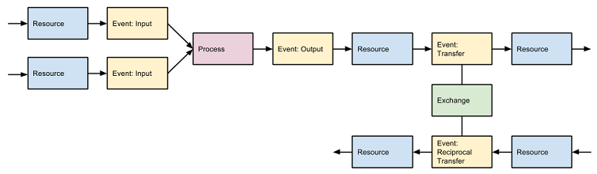
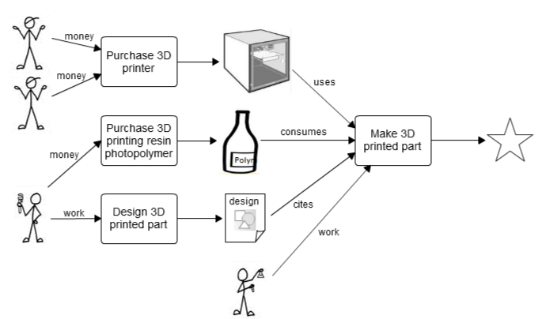
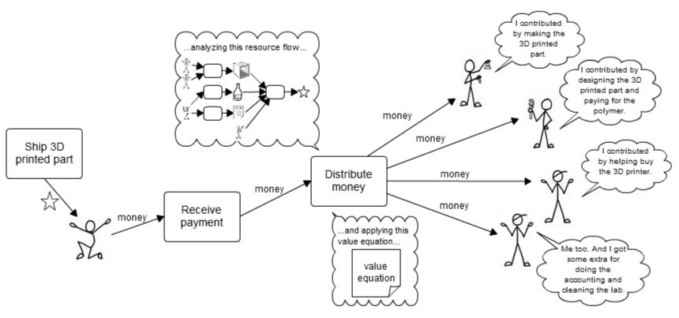
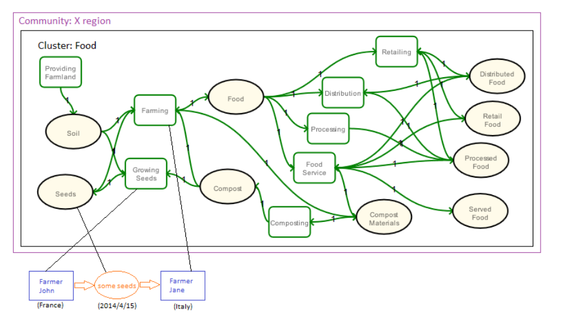
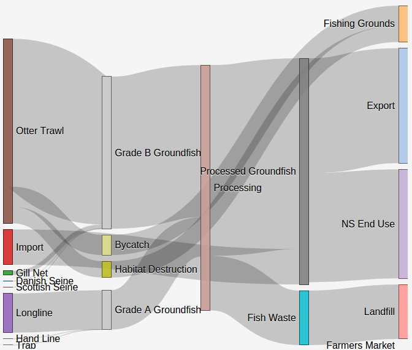
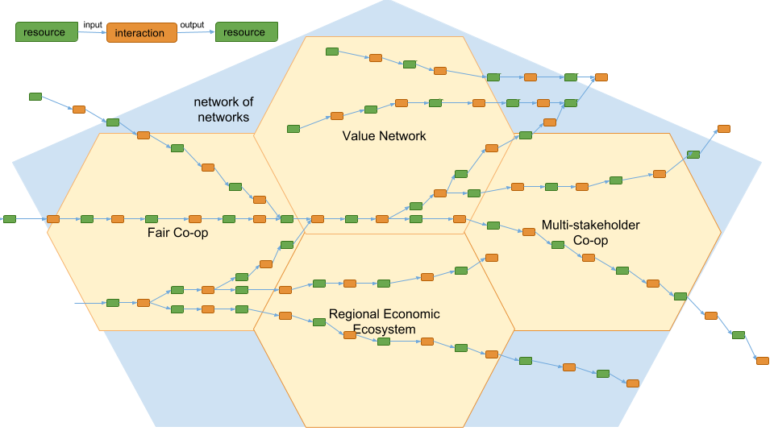

All of the software we work on here is based on resource flows. These can occur at any level of economic activity.
The basic pattern is that resources flow into and out of processes through input and output events; and resources flow from one agent to another through give/take events in exchanges. Resources can flow through processes and exchanges in any order.
At the operational level, actual resources are being used, consumed, cited, created, changed, exchanged. We define resources fairly broadly. Resources can be material things, designs, documents, code, as well as work. But they are real. (We can also define resource types, which allows recipes and planning to drive the actual work.)
The software can:
Here's a simple example for manufacturing. First the work is done to create something, the thing is sold and the income calculation flows back through the resource flow and applies the value equation.
 A note on resource flows and project management: The resource flow model does not fit neatly with standard project management tools, which tend to connect processes directly together as predescessors and successors. By using resources as the connectors, it makes the connections flexible within its context. That is, a process can take in a particular kind of resource from any other process that created it, or from any exchange that received it.
A note on the use of money: This example uses money as the return income stream, because that is how it works in this real example. But there is no requirement anywhere for money to be used. Resource flows will support barter, alternative currencies, credits, a portion of what is produced, whatever.
At a higher level, the resources are still real, but are an accumulation by place, time, type of resource, or any other useful category. Here is an example of a food cluster for a community. A sample lower level flow is shown as a breakout.
Here is a different visualization of a cluster for fishing. In this example the fish resources are at the level of fishing gear, and grade.
Here is a vision of networks connected by resource flows. We can build a whole economic ecosystem for ourselves this way!
 mikorizal software
mikorizal software